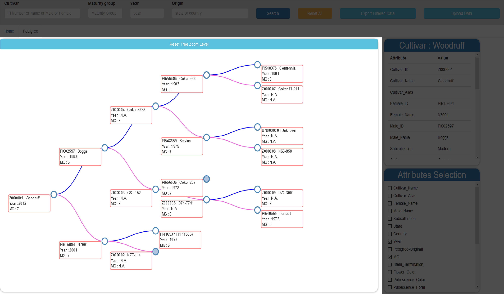
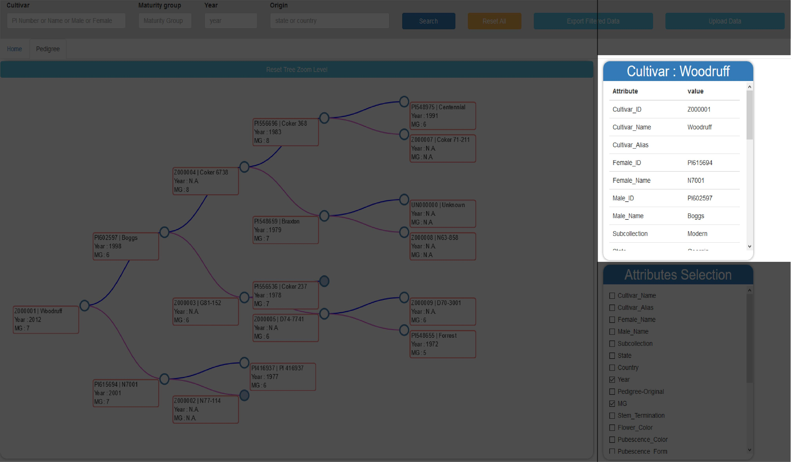
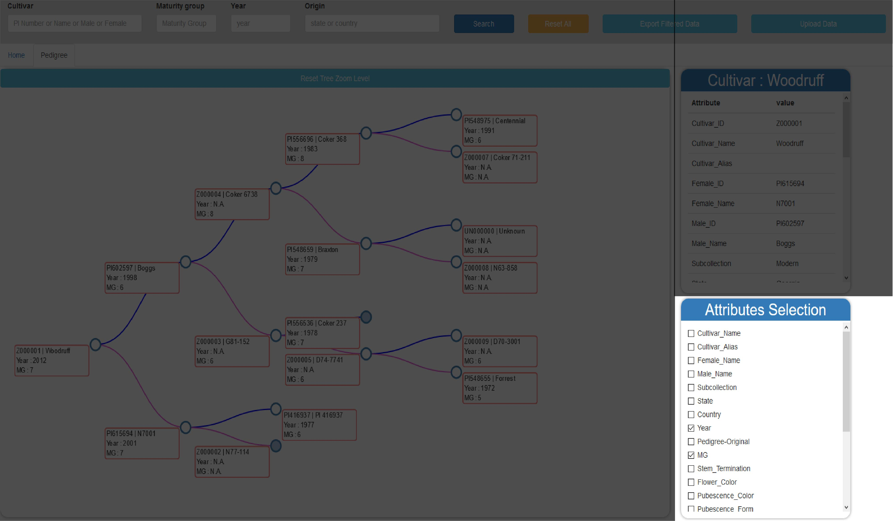

INTRODUCTION
The narrow genetic base among U.S. soybean cultivars is a limitation to the current rate of yield improvement. Empowering soybean breeders with the ability to easily access the pedigrees and traits of existing and historical cultivars/breeding lines for both parental and progeny selection will help improve the rate of genetic gain by increasing genetic diversity in breeding populations. Additionally, plant breeding programs often have great difficulty in properly managing pedigree information due to pedigree complexity and the feasibility of maintaining a centralized resource where this information is easily inputted and effectively visualized. To assist breeders in making parental selections and tracking breeding materials within their breeding programs, we have developed maxPedigree©, a program for managing pedigree and trait data for cultivars and breeding lines. maxPedigree© was developed using JavaScript programming language and MySQL, an open-source relational database system, which can store the data on a local computer or network server. The maxPedigree© interface is connected to the MySQL database and is able to pull the pedigree and trait information for visualization and application by plant breeders. The current version of maxPedigree© features:
- an interactive search-based cultivar-pedigree database, that will allow breeders to look up and visualize pedigree tree information;
- phenotypic data for descriptors and agronomic traits established by the USDA for the soybean germplasm collection;
- exportation of customizable data tables with desired lines and trait data.
- colored trait tracing through pedigree trees
- storing of genotypic data for haplotype calling and population structure/diversity analyses;
- integration of established tools for genome-wide association study (GWAS) and genomic selection (GS) applications. Each breeding program can have their own personal database for storing cultivar and breeding line information with maxPedigree©. For the first time, soybean breeders will have access to this trove of information in one convenient, user-friendly platform. The program for this assistive plant breeding tool, once established, could also be applied to other crops such as maize, cotton, peanut, and wheat.
FEATURES :
Horizontal Search bar
A Horizontal Search Bar along the top of the screen allows users the ability to search and locate specific cultivars or breeding lines of interest. Users can search using multiple criteria as well as partial inputs. The search bar contains a search button, reset button, and an export filtered data button which is used for the exporting the cultivar information sheet The search bar will feature four unique searchable functions for breeders to identify specific genotypes:
- PI number or genotype name
- Maturity group
- Year of Release
- Origin (State or Country)
Pedigree tree
The Pedigree Tree starts at a chosen line and creates a tree from left to right with all available pedigree data. Male parents are indicated by blue lines and female parents are indicated by pink lines. Each node is collapsible simply by clicking on the node. Clicked nodes will appear as filled in blue circles. The tree can be panned vertically or horizontally using scroll bars. Zooming in and out is also an option. Each line in the Pedigree Tree appears in a red box with both the PI number and name. Two attributes can also be displayed within the box for each line.
Cultivar Information
Users are able to click on any line within the Pedigree Tree and a Cultivar Information box will pull up in the top right corner populated with specific details and phenotypic data relevant to the selected line.
Attribute Selection
The bottom right corner contains an Attributes Selection box in which any two attributes can be selected and these will be populated for each line within the Pedigree Tree.
Cultivar Information Sheet
- A filtered search can be run using the search bar and this sheet will be populated with lines that meet the filtered criteria as well as their attribute information. The show tree button will create a pedigree tree for the selected line.
- The export filtered data button in the top right corner will allow the user to export the cultivar information sheet for the filtered data as a csv file for future reference.
Contact Info :
Zenglu Li Center for Applied Genetic Technologies 111 Riverbend Rd.,Athens, GA 30602 Phone: 706-542-9805 Email: zli@uga.edu UGA Soybean Breeding and Molecular Genetics Laboratory